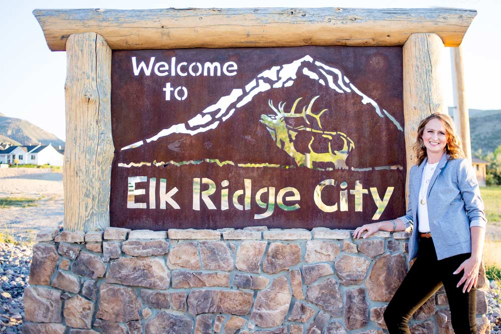
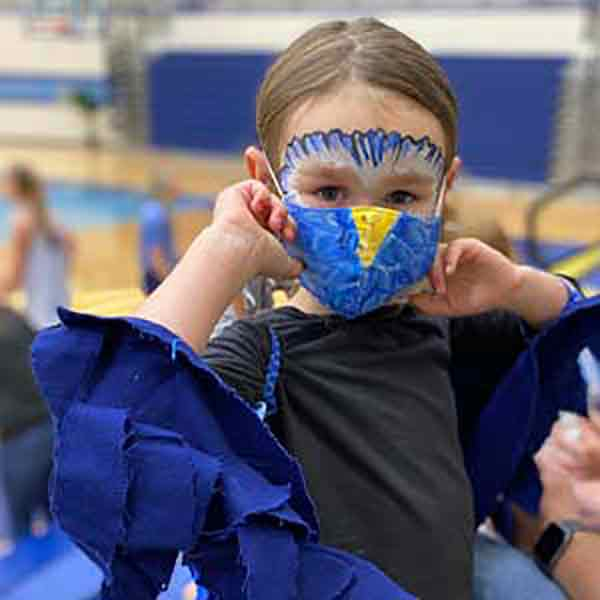
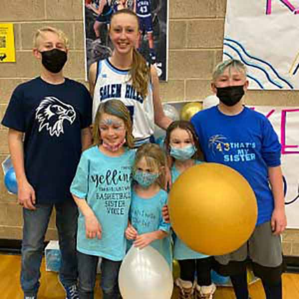
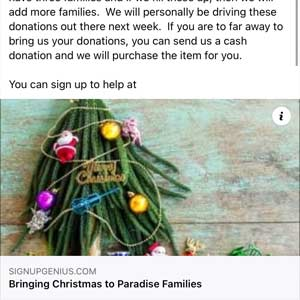
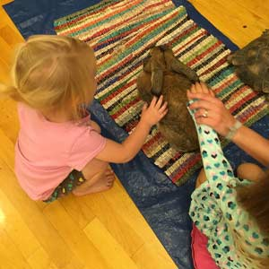
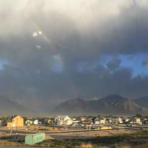
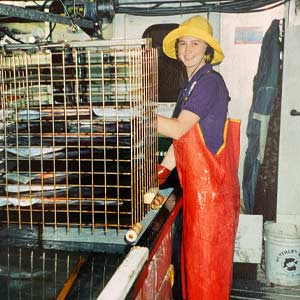
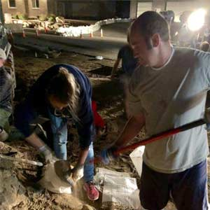
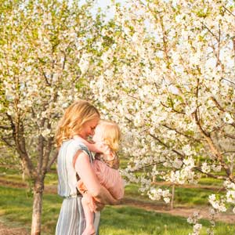
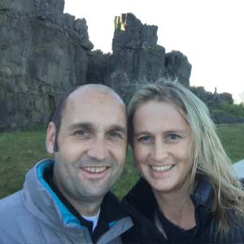

Tanya's Story.
My favorite way to introduce myself is in person. We are planning several opportunities to do so, but I wanted to share a little bit about myself in case you can't make it.
Join me as, together, we strengthen our community & focus on the future of Elk Ridge!
Tap the pictures to see additional information.
-

Team Player.
If you've been to a girls Skyhawks basketball game in the last 4 years, then I'm sure you've seen me and my family...
-
Big Fan.
I believe in going big when I commit to something.
Spirit.
Blue hair, face paint, Skyhawk wings, and the works.
-

All In.
While my children won't show up to council meeting with blue hair, I will bring that same level of commitment and enthusiasm as I serve on the city council.
-
Always Serving.
I enjoy every opportunity to serve...
 -

Involved.
Be it helping in classrooms, serving on PTA or school community council, coaching sports teams, developing and running the Kindness Club at Mt Loafer.
-
Committed.
Fascilitating the day shelter during the wild fire.
 -

Knowledge.
I have commercially fished and worked in a fish cannery. It's safe to say I have gutted more salmon in a day then anyone else in Elk Ridge. (Not a very useful skill for City Council.)
-
I grew up in...
The Alaskan fishing community of Kodiak.
Devoted.
I swam in salmon streams, played in the freezing cold ocean, and lived the iconic "Alaskan Experience"— I learned invaluable lessons from my experiences there.
-

Experience.
The skills I learned while attending school at BYU are much more useful here in Elk Ridge, on the City Council.
-
Education.
I majored in Business Management - Financial Services with an emphasis in Real Estate.
 -

Partnership.
Date night does, sometimes, involve excel spreadsheets— With my husband having a Masters in accounting and his CPA!
-
Organized.
My unique love for analyzing numbers and reports will help me better serve my community.